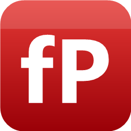
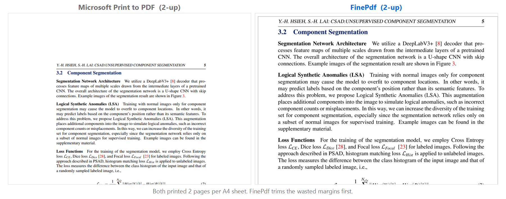
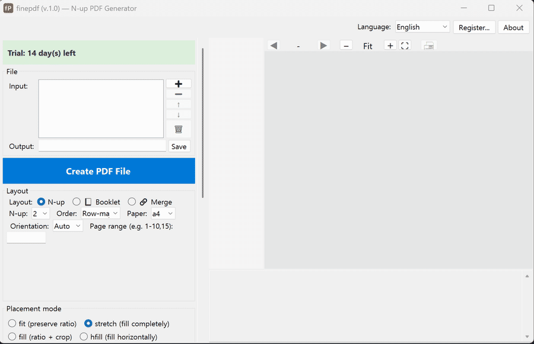
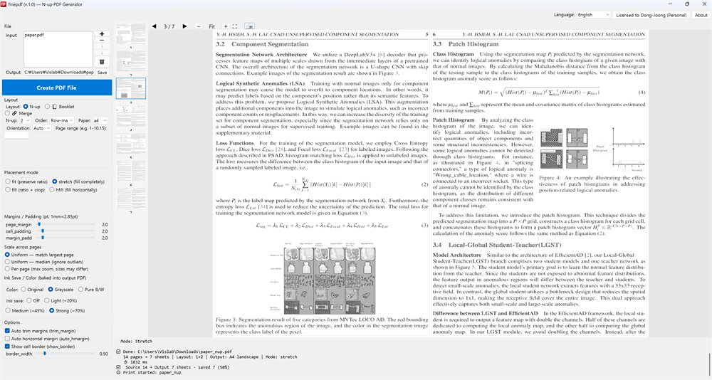
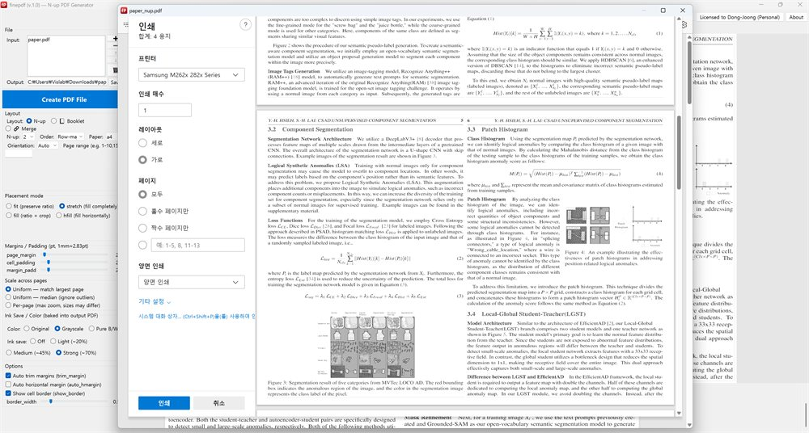

FinePdf프린터의 모아찍기는 글자를 못 알아볼 만큼 줄여버립니다. 원인은 폰트가 아니라 여백입니다. FinePdf는 페이지마다 실제 내용 영역을 찾아 여백을 먼저 잘라낸 뒤 배치합니다.
무료 체험 다운로드
강의 슬라이드나 논문 PDF는 페이지의 20~30%가 흰 여백입니다. 프린터 드라이버의 모아찍기는 그 빈 공간까지 글자와 함께 그대로 축소합니다. 그래서 모아찍기를 한 번 써보고는 다시 안 쓰게 되는 겁니다.
FinePdf는 순서를 바꿉니다. 여백을 먼저 잘라내고, 그다음에 배치합니다. 종이 장수는 똑같은데 글자는 훨씬 큽니다. 4쪽·8쪽으로 갈수록 차이는 더 커집니다. 페이지마다 내용 크기가 달라도 글자 크기가 들쭉날쭉해지지 않도록 전체에 같은 배율을 적용합니다.
PDF를 끌어다 놓으면 바로 결과가 보입니다. 배치·여백·잉크 설정을 바꿀 때마다 미리보기가 즉시 갱신됩니다.

가로/세로 방향을 자동으로 판단해 가장 잘 맞는 배치를 고릅니다.
페이지마다 실제 내용 영역을 감지해 빈 여백을 먼저 잘라냅니다.
A4를 반으로 접으면 A5 책자가 되도록 페이지 순서를 배열합니다.
파일 여러 개를 끌어다 놓으면 하나로 합쳐 한 번에 변환합니다.
토너 사용량을 단계별로 줄입니다. 결과 PDF에 그대로 반영됩니다.
변환 전에 몇 장이 몇 장으로 줄어드는지 숫자로 보여줍니다.
흑백 잉크 절약 모드를 켜면 같은 내용을 훨씬 적은 토너로 인쇄합니다.


체험판에 기능 제한이 없습니다. 쓸 만한지 직접 확인한 다음에 결정하시면 됩니다.
아직 안 됩니다. 지금은 Windows 10 / 11 (64비트) 전용입니다. 맥 버전이 필요하시면 GitHub 이슈에 남겨주세요. 수요가 보이면 만들 이유가 생깁니다.
드라이버는 페이지를 통째로 축소합니다. 흰 여백까지 같이 줄어드니 글자만 손해를 봅니다. FinePdf는 페이지에서 글자와 그림이 실제로 있는 영역을 찾아 여백을 먼저 잘라낸 뒤 배치합니다. 같은 4쪽 모아찍기라도 글자 크기가 달라지는 이유가 이것입니다.
없습니다. 14일 동안 모든 기능이 열려 있고, 결과물에 워터마크도 없습니다. 가입이나 카드 등록도 필요 없습니다. 받아서 바로 쓰시면 됩니다.
라이선스 파일을 사람이 직접 발급합니다(1인 개발입니다). 결제 후 48시간 안에 이메일로 보내드립니다. 받으신 파일을 About → Register에서 불러오면 등록이 끝납니다.
14일 체험으로 충분히 확인하고 결제하시는 구조라 환불 요청은 드물지만, 결제 후 문제가 있으면 finepdf.team@gmail.com으로 연락 주세요. 결제는 Lemon Squeezy를 통해 처리됩니다.
대부분 됩니다. 다만 스캔본처럼 글자가 이미지로 들어 있거나 회전 정보가 특이한 PDF는 여백 감지가 완벽하지 않을 수 있습니다. 변환이 이상하게 되는 파일이 있으면 그 PDF를 보내주세요. 가장 도움이 되는 제보입니다.